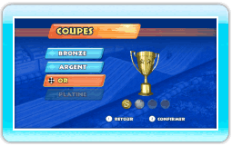
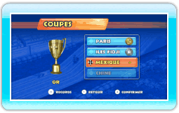

14 |
Jouer en mode Coupes |
 |
En mode Coupes, vous participez à divers championnats, sur différents circuits situés aux quatre coins du monde. Sélectionnez COUPES depuis le menu principal afin d’afficher l’écran de choix de la coupe.
Sélectionnez la coupe à laquelle vous souhaitez participer. Chaque coupe compte quatre courses différentes. Lorsque vous jouez avec un nouveau profil, la seule coupe disponible est la coupe BRONZE et le seul circuit disponible est celui de KYOTO.
Terminez une course afin de déverrouiller la course suivante d’une coupe. Pour déverrouiller la coupe suivante, il vous faut obtenir un rang B ou mieux dans les quatre courses de la coupe.
Il est possible d’obtenir les rangs suivants, du moins bon au meilleur: D, C, B, A et S.
|
 |
 |
 |